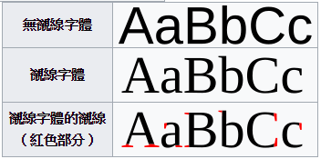

一、font-family
font-family 字體的指定可以是一個也可以是多個，
通常為了讓不同作業系統平台都能正確的顯示出字型都會一次指定多個字體，如下
<!DOCTYPE html> <html> <head> <style> .p1 { font-family: Helvetica,"蘋果儷中黑","微軟正黑體",Verdana,Arial,sans-serif,"新細明體"; } </style> </head> <body> <p>Helvetica 蘋果儷中黑</p> <p class="p1">Helvetica 蘋果儷中黑</p> </body> </html>
說明：
1、
一開始當 client 端沒有支援「Helvetica」字體時，便會嘗試套用「蘋果儷中黑」字體，
若無支援則會嘗試套用「微軟正黑體」字體，若無，則可依序套用到最後「新細明體」，
由此可知最後面應該擺最普遍支援最安全的字體，確保每位瀏覽者都能看的到字。
2、
如果一個字體名稱裡包含空白，可能要用引號括起來，如
.p2 { font-family: "Arial Black"; }
但我在 chrome 試驗下是可以不用引號的，
但中文的字體名稱一律要加上引號。
二、serif 與 sans-serif
serif 字體代表有襯線字型，sans-serif 字體代表無襯線字型

三、字體介紹
1、Helvetica
在 windows 系統裡並無內建 Helvetica 字體，當使用時 windows 系統會「聰明」地拿跟 Helvetica 字體相近的 Arial 字體來替代。
2、Microsoft JhengHei
於 windows Vista 開始支援，當系統無法列出中文字型名稱「微軟正黑體」時，
則以英文字型名稱「Microsoft JhengHei」來表示。
3、Microsoft YaHei
微軟雅黑體是 windows 簡體中文版預設的字型，其也可以顯示繁體中文，字型比微軟正黑體稍粗一點，
於 windows Vista 開始支援，當系統無法列出中文字型名稱「微軟雅黑體」時，
則以英文字型名稱「Microsoft YaHei」來表示。
4、蘋果儷中黑
英文字體名稱為「Apple LiGothic Medium」為蘋果內建字體，
如果 windows 系統也想用的話，也是有辦法的(網路上都有許多教學文章)，
在此列出關鍵字「LiGothicMed」。
5、Verdana

為 Windows 內建字體，於 windows 95開始支援。
6、PMingLiU

於windows 3.1開始支援，當系統無法列出中文字型名稱「新細明體」時，
則以英文字型名稱「PMingLiU」來表示。
八、其他
CSS 文件通常默認編碼是 big5 而不是 UTF-8，這會使得 font-family 中的「中文名稱」字體失效，
看過有人教學在 CSS 文件的「最頂部」添加「@charset "UTF-8";」代碼就可以解決，
但我試了卻無效，我干脆直接把 CSS 文件另存新檔，指定編碼為 UTF-8 立馬解決。
參考資料：